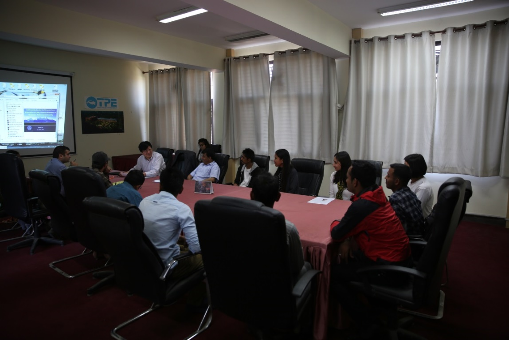

根据中国科学院大学和青藏高原研究所留学生招生指导精神，4月9日，青藏高原所分管教育副所长马耀明研究员、中国科学院加德满都科教中心副主任Binod Dawadi副教授、业务主管徐田利博士及尼泊尔特里布文大学水文气象系Lochan P. Devkota教授等人，在中国科学院加德满都科教中心对13名尼泊尔籍学生进行了现场面试。本着公开、公平、公正、择优录取的原则，专家们逐一听取了学生们的个人汇报，经过提问和现场考评，根据学生的英语水平、专业知识背景和现场回答情况，最终按综合成绩进行了排名和择优录取。
本次招生是继2016年招收第一届24名硕士留学生英文授课班后，启动的“第二届硕士留学生班”面试工作。该项目旨在加强与“第三极”地区国家间的科教合作，并推动中科院加德满都科教中心建设。今年中科院推出了新的“一带一路奖学金项目”，与中国政府奖学金和中国科学院大学奖学金一起，为更多更优秀的留学生提供深造的机会。相信随着硕士留学生项目的实施，会吸引更多优秀的人才来华深造，不仅可以为尼泊尔和周边国家培养更多青年一代科技人才，也为推动中国与周边国家的科研合作创造良好条件，并进一步将“一带一路”周边国家间的科教合作推向新高度。

招生面试现场